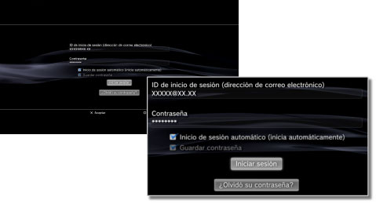

PlayStation™Network > Guardar contraseña / inicio de sesión automático
Guardar contraseña / Inicio de sesión automático
Para utilizar esta función, debe mantener siempre el software del sistema actualizado con la versión más reciente.
Si guarda su contraseña, ésta se rellenará automáticamente en la pantalla de inicio de sesión. Si además ajusta la opción de inicio de sesión automático, el sistema PS3™ iniciará sesión en PSNSM automáticamente al encenderlo.
Avisos
- Si guarda su contraseña es posible que otras personas puedan utilizar los servicios de PSNSM o consultar la información de su cuenta.
- Antes de entregar el sistema PS3™ a un centro de servicio técnico autorizado, asegúrese de desactivar la opción [Guardar contraseña] en la pantalla de inicio de sesión de PSNSM para todos los usuarios. Esta acción le ayudará a evitar el acceso no autorizado o la utilización de su tarjeta de crédito o de otros datos personales.
- Antes de entregar el sistema PS3™ a terceros por cualquier motivo, incluida la devolución (en los casos en los que esté permitida), asegúrese de eliminar todos los datos y de restablecer los ajustes predeterminados en el sistema PS3™. Esta acción le ayudará a evitar el acceso no autorizado o la utilización de su tarjeta de crédito o de otros datos personales.
1. |
Seleccione |
|---|---|
2. |
Introduzca su ID de inicio de sesión (dirección de correo electrónico) y su contraseña. |
3. |
Seleccione la casilla de verificación de [Guardar contraseña] e [Inicio de sesión automático (inicia automáticamente)].  |
Nota
Si se ha ajustado [Inicio de sesión automático (inicia automáticamente)], el icono de  (Iniciar sesión) ya no se mostrará.
(Iniciar sesión) ya no se mostrará.
Cancelar la opción de inicio de sesión automático
Seleccione  (Administración de cuentas) en
(Administración de cuentas) en  (PlayStation™Network) y, a continuación, seleccione [Inicio de sesión automático desactivado] en el menú de opciones. La próxima vez que encienda el sistema PS3™ no se iniciará la sesión automáticamente.
(PlayStation™Network) y, a continuación, seleccione [Inicio de sesión automático desactivado] en el menú de opciones. La próxima vez que encienda el sistema PS3™ no se iniciará la sesión automáticamente.
Cancelar la opción de guardar contraseña (borrar la contraseña)
1. |
Seleccione |
|---|---|
2. |
En la pantalla de introducción del ID de inicio de sesión y la contraseña, desmarque la casilla de verificación [Guardar contraseña]. |
Notas
- Si el inicio de sesión automático está ajustado, el icono de (Iniciar sesión) no se visualizará. En tal caso, primero deberá eliminar el ajuste del inicio de sesión automático.
- Aunque elimine el ajuste del inicio de sesión automático, iniciará sesión automáticamente si se encuentra desconectado temporalmente de la red cuando estaba conectado.